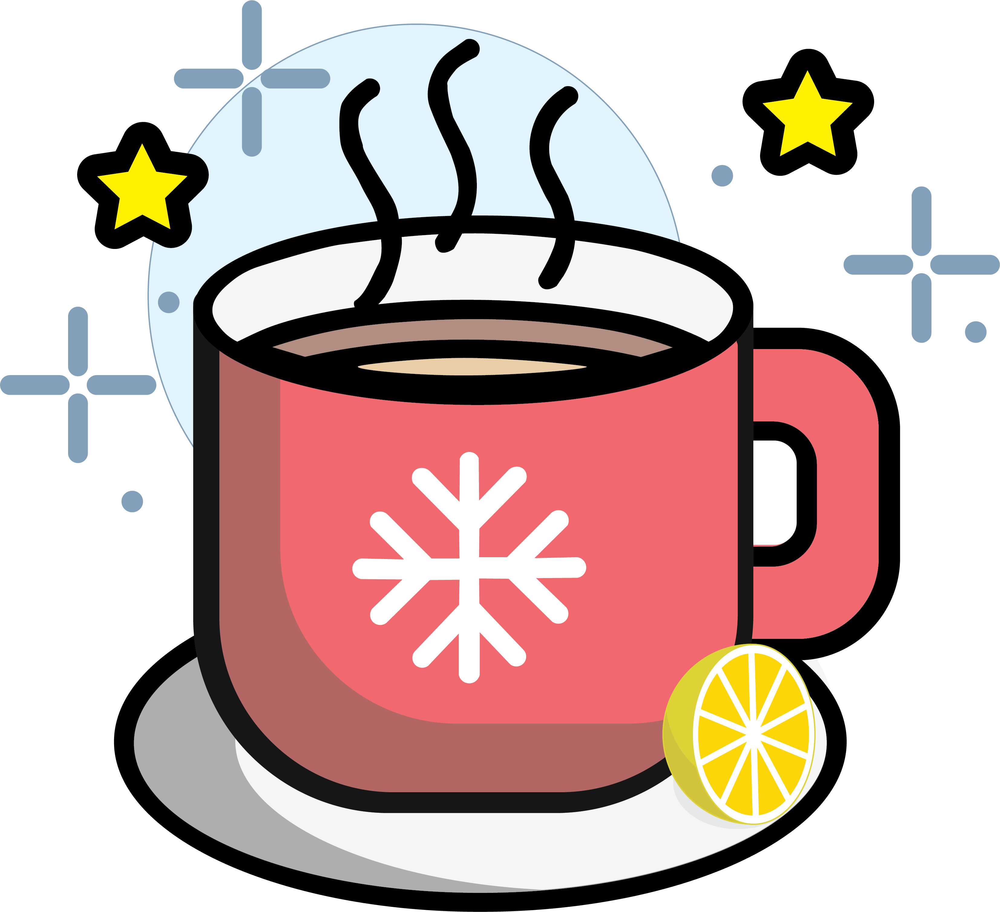

Illustrator crtež

Photoshop retuširanje
Prije
Nakon
Dizajn i razvoj front-enda (uz pomoć Bootstrap 5)
Pregled straniceRazvoj front-enda
Pregled straniceDostupni naslovi : HOME ,HOURS & LOCATION, OUR TEAM, OUR STORY, PRESS, CONTACT
*stranica je kopija dizajna postojeće stranice
Dizajn i razvoj back-enda
Kliknite za preuzimanjeKako bi vidjeli stranicu kao "vlasnik restorana" upišite username:asia i lozinku:12345678